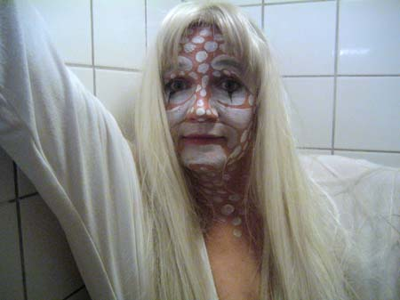

Lene Leth Lebbe |
 |
| Lene Leth Lebbe's performances are experimental and theatrical. She has performed in Denmark, Sweden, Germany, France, Spain. Lene Leth Lebbe is a part of the dunst performance groupe www.dunst.dk (opens a new window) |